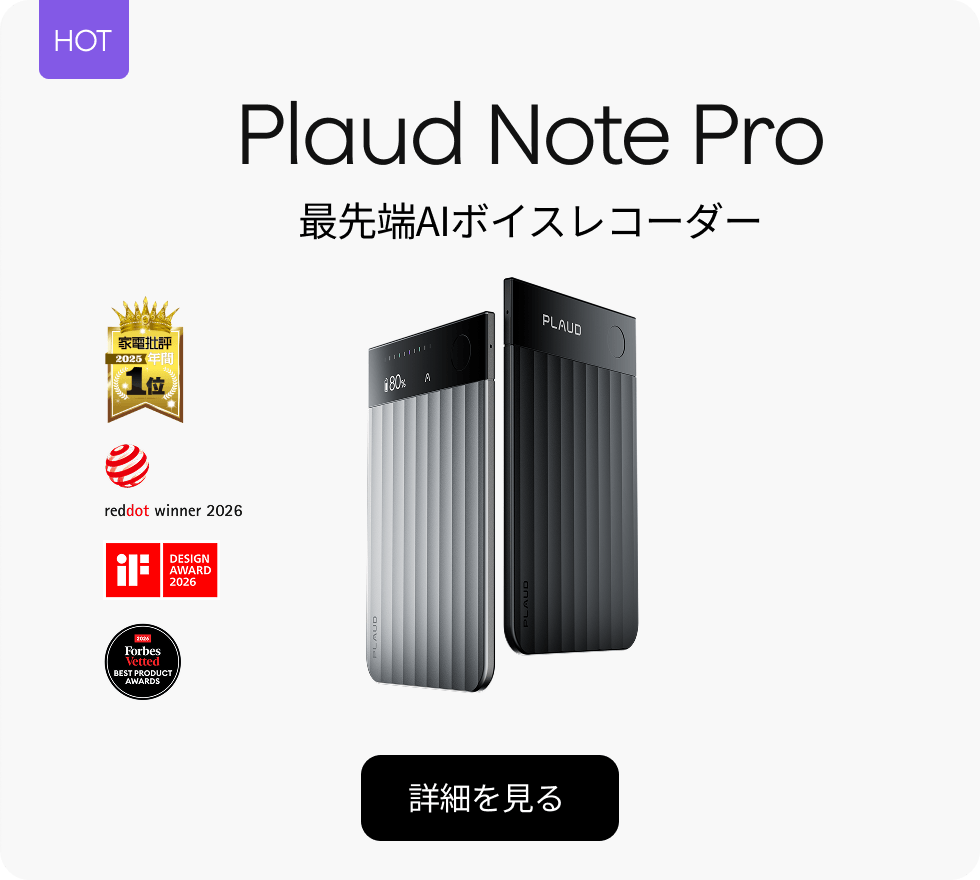

Plaud（プラウド）は、専用AIボイスレコーダーとクラウドAI「Plaud Intelligence」で、対面・通話の会話を文字起こし・要約・検索できるサービスです。結論：スマホ会議アプリでは拾いにくい「対面商談・取材・移動中の通話」を残したい人に向き、オンライン会議の自動文字起こしだけならNotta等の方が手軽な場合もあります。本記事では、向き不向き、デバイスとAIプランの料金、Notta・Otter.aiとの違いを2026年6月時点で整理します。
向いている人・向いていない人
| 向いている人 | 向いていない人 |
|---|---|
| 対面の商談・ヒアリングを漏れなく残したい | Zoom・Meetだけで完結する会議が大半 |
| スマホを置かずワンタッチで録音開始したい | 初期費用ゼロのクラウドSTTだけで十分 |
| 通話・対面を自動切替で記録したい | 動画編集まで一気通貫（Descript向け） |
| 資格勉強の講義・勉強会を復習用に残したい | 録音同意が取れない機密会議が中心 |
対面記録が主ならPlaud Noteなどデバイス本体の検討、オンライン会議中心なら先にNottaやZoom AI Companionとの比較が現実的です。
試験で問われる見方
生成AIパスポートでは、Speech-to-TextとText-to-Speechの区別、音声データの個人情報リスク、議事録作成へのAI活用が論点になります。Plaudは「物理デバイス＋クラウドSTT」の具体例として整理するとよいです。
「Plaud＝ChatGPTの文字起こし機能と同じ」「Plaud＝音声合成AI」と混同しないことが重要です。Plaudは録音ハードとPlaud Intelligenceの組み合わせであり、汎用チャットボットそのものではありません。
このサイトの演習で確認する
生成AIパスポート：TF-0195（Speech-to-TextとTTS）、TF-0289（音声データの個人情報）、TF-0447（文字起こしから議事録）
Plaudとは
Plaudは、カードサイズのAIボイスレコーダー（Plaud Note / Note Pro / NotePin など）で音声を収録し、Plaud App・Web・Desktop上のPlaud Intelligenceが112言語の文字起こし・多次元要約・Ask Plaud（録音内容への質問）を行うサービスです。公式ではシリーズ累計200万台出荷などを掲示しています（2026年6月時点）。
よくある誤解は2つ。①スマホアプリだけと思うこと——本体デバイスが録音の入口で、アプリは同期・文字起こし・共有が中心。②買えば全部無料——デバイス購入者はStarterで月300分の文字起こしが付きますが、ヘビーユースはPro / Unlimitedなどの有料メンバーシップが必要です。
Note Proは通話と対面を自動判別するデュアルモード、ハイライトボタン、テキスト・画像のマルチモーダル入力に対応。医療・法律など機密性の高い現場向けに、ISO 27001・GDPR・HIPAA等の準拠を公式に掲示しています。
主な機能
デュアルモード録音
対面会話と通話を自動判別。スマホを構えず、デバイス単体で録音開始。
112言語の文字起こし
話者ラベル付き。多言語会議・取材の下書き作成に。
多次元要約
会議の決定事項・ネクストアクションなど、用途別テンプレートで要約（プランにより機能差あり）。
Ask Plaud
録音・文字起こし内容に自然言語で質問。長時間音声の要点抽出に。
マルチモーダル入力では、ハイライト（短押し）で重要瞬間を印付け、テキスト・写真を足して文脈を補強できます。Plaud IntelligenceはGPT-5.2、Claude Sonnet 4.6、Gemini 3.1 Proなどを基盤とすると公式に説明されています（2026年6月時点）。

よくある誤解
代表的な誤解は「Plaud＝Notta / Otter.aiの日本語版（同一カテゴリ）」です。どちらも文字起こしですが、Plaudは専用ハード＋持ち歩き録音、Notta / Otterはクラウド会議連携が中心の別製品です。
もう1つは「Plaud＝Text-to-Speech」です。Plaudは音声→テキストのSpeech-to-Textが本流であり、音声合成AIではありません。
料金（デバイス＋AIプラン）
以下はPlaud公式・AIメンバーシップに基づく2026年6月時点の整理です。セールやセット価格は変動します。
デバイス本体（税込）
| 製品 | 価格（2026年6月時点） | 特徴の目安 |
|---|---|---|
| Plaud Note | ¥27,500 | 定番モデル。カードサイズのAIレコーダー |
| Plaud Note Pro | ¥30,800 | AMOLEDディスプレイ・マルチモーダル・デュアルモード強化 |
| Plaud NotePin / NotePin S | ¥27,500〜¥28,600 | ウェアラブル型。常時持ち歩き向け |
Plaud AIメンバーシップ（文字起こし）
Starter
¥0
300分/月（デバイス購入者）
Pro
¥1,400/月
年払い ¥16,800/年
Unlimited
¥3,333/月
年払い ¥40,000/年
| プラン | 文字起こし | 料金目安（2026年6月時点） |
|---|---|---|
| Starter | 300分/月 | デバイス購入特典（追加料金なし） |
| Pro | 1,200分/月 | 年払い ¥16,800/年（実質¥1,400/月）／月払い ¥3,000/月 |
| Unlimited | 無制限（1日最大24時間） | 年払い ¥40,000/年（実質¥3,333/月）／月払い ¥5,000/月 |
デバイス＋年間Pro / Unlimitedのセット商品も公式で販売されています（例：Note Pro＋年間Pro セット ¥47,600 など）。契約前に購入の流れと合わせて最新価格を確認してください。
購入から使い始める流れ
- 機種を選ぶ対面中心なら Note / Note Pro、常時装着なら NotePin。公式の製品比較表を参照。
- 購入・初期設定Plaud Note 公式ストアまたは正規代理店から購入し、Plaud Appでデバイスをペアリング。
- 録音同意を確認会議・取材前に参加者へ録音の旨を伝え、社内規程に沿う。
- 録音→同期長押しで録音、短押しでハイライト。Wi-Fi経由でクラウドへ同期。
- 文字起こし・要約Plaud App / Webで要約テンプレートを選び、Ask Plaudで追質問。
- （任意）プランアップグレード月300分を超える場合はPro / Unlimitedを検討。
AI Master読者向けの活用法
資格学習：講義・勉強会の復習
仕事：議事録の下書き
- 対面MTGの一次下書き 決定事項・TODOを要約テンプレートで出力し、人手で最終確認
- オンライン会議との併用 Meet / ZoomはNotta、対面はPlaudと役割分担
メリット・デメリット
| メリット | デメリット |
|---|---|
| 対面・通話をワンタッチで記録 | 本体代2.7万円〜の初期費用 |
| 112言語・Ask Plaudで長音声を整理 | 無料は月300分。ヘビーユースは追加課金 |
| ハード持ち歩きでスマホ依存が減る | Zoom連携だけ欲しい人には過剰スペック |
| セキュリティ認証を公式に掲示 | 録音同意・機密情報は利用者側で判断必須 |
| マルチモーダルで文脈-richな要約 | 動画編集まで必要ならDescript等が別途必要 |
主要ツールとの比較
| 項目 | Plaud | Notta | Otter.ai |
|---|---|---|---|
| 形態 | 専用デバイス＋クラウドAI | クラウドアプリ | クラウドアプリ |
| 強み | 対面・通話の持ち歩き録音 | 日本語会議・Meet/Zoom連携 | 英語圏会議・OtterPilot |
| 初期費用 | 本体 ¥27,500〜 | ¥0（Freeから） | ¥0（Freeから） |
| 無料枠の目安 | 300分/月（デバイス購入者） | 120分/月 | 300分/月 |
| 試験での例 | 物理録音＋STT・同意の論点 | 日本語STT・議事録AI | STT・議事録AI |
使い分け：対面・移動が多い → Plaud、日本語オンライン会議 → Notta、英語中心の国際会議 → Otter.ai、収録後の動画編集 → Descript。
よくある質問
Plaudはスマホアプリだけで使えますか？
いいえ。Plaud Note / Note Pro / NotePin などの専用ハードウェアが中心です。録音データはPlaud App・Web・Desktopで文字起こし・要約・共有します。
Plaudを買えば月額料金は不要ですか？
デバイス購入者はStarterで月300分の文字起こしが無料です（2026年6月時点）。それ以上はPro（1,200分/月）やUnlimited（1日最大24時間）などの有料メンバーシップが必要です。
PlaudとNottaの違いは？
Plaudは専用デバイスで対面・通話を持ち歩き録音するのが強み。NottaはZoom・Meet連携中心のクラウドSTTです。用途で選ぶのが現実的です。
Plaudは音声合成（Text-to-Speech）ですか？
いいえ。Speech-to-Text（音声→テキスト）と要約が中心です。TTSとは入出力が逆です。
録音するときに注意することは？
公式でも、録音前に参加者へ同意を得るよう案内されています。個人情報・機密情報は社内規程と法令を確認してください。